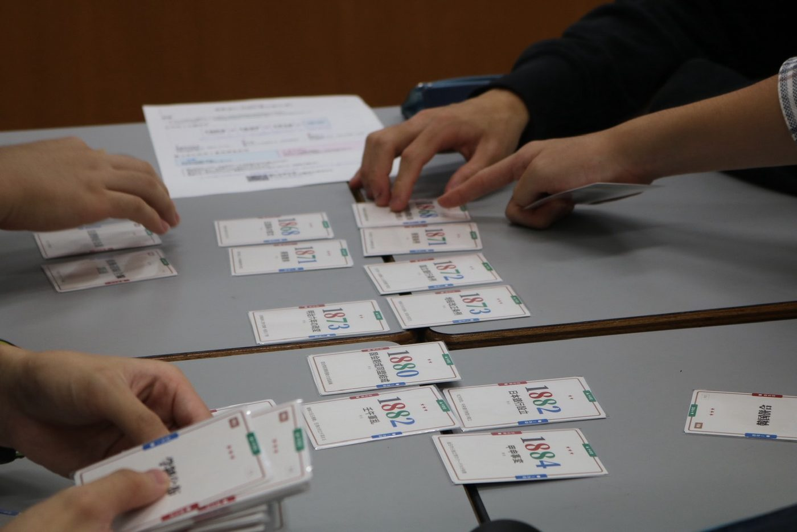
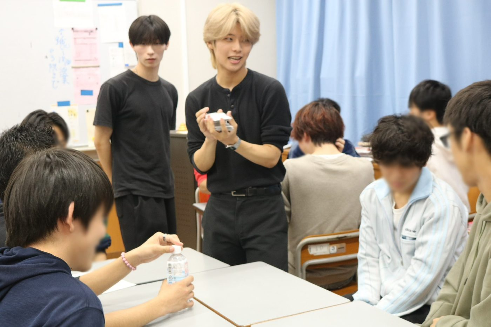
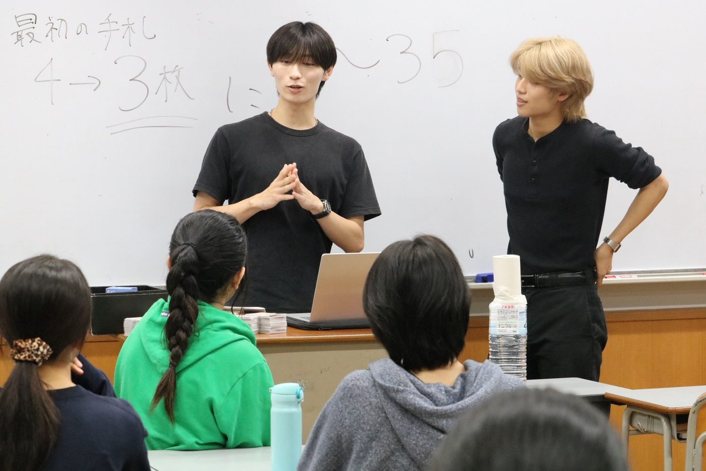

高校3年生に、自作の日本史カードゲームで授業をしてきました
9月11日、母校の公文国際学園で、高校3年生の日本史の授業を1コマもらって、自分で作ったカードゲームを遊んでもらいました。マイダスのメンバーでもある岩奥くんと2人で行ってきました。
どんなゲームか
作ったのは、出来事が書かれたカードを年代順に並べていくゲームです。表には「ペリー来航」のような出来事名だけ、裏に年号が書いてあります。手札の出来事が年表のどこに入るかを考えて差し込み、裏返して答え合わせ。正解すれば手札が減って、最初に手札をなくした人の勝ちです。

並んでいくのは年表そのもの。手札のカードがどこに入るかを考えて差し込み、裏返して答え合わせをする。
作ろうと思った理由
理由は2つあります。1つは、自分の受験を振り返ったときに友達の存在が大きかったこと。一人で黙々とやった時間より、友達と一緒にやった時間の方が記憶に残っていました。もう1つは、高3の秋は勉強ばかりでしんどいので、息抜きになる時間を作りたかったことです。
カードの印刷デザインにはAI（Claude）を使いました。収録する出来事は、受験で問われるものを中心に自分で選んでいます。用意したのは明治セット63枚と、大正・昭和戦前セット54枚の2種類です。
当日の様子
当日は35人を8班に分けて、2種類のデッキで遊んでもらいました。正直、ちゃんと盛り上がるかずっと不安でした。でも始まってみると、「それ西南戦争より前じゃない？」と班の中で相談しながら置いていて、正解すると班全体で喜んでいる。競争のゲームなのに、自然と教え合いになっていたのが一番うれしかったです。


授業の後半10分は、受験期の経験談を話す時間にしました。
アンケートの結果
授業後のアンケートには25人が答えてくれて、「楽しかった」の5段階評価で23人が5、2人が4をつけてくれました。理解が深まったかについては「非常に」が13人、「ある程度」が12人です。
一番ほっとしたのは、日本史が苦手寄り（得意度1〜2）と答えた9人のうち、8人が「楽しかった」に5をつけてくれていたことでした。「自分の持っているカードの前後の時代も振り返りができてよかった」という声もありました。
一方で、「人物や事件のイラストがあるともっと覚えやすい」「チーム戦や協力要素があるともっと面白い」といった改善点ももらったので、次に活かしたいと思います。
学校のInstagramでも紹介してもらいました
後日、学校の公式Instagramでもこの授業の様子を紹介してもらいました。投稿の中で「競い合うだけでなく学び合う風景が自然とできていました」と書いてもらっていて、自分が一番うれしかったところを、先生方も同じように見てくれていたんだなと思いました。
授業のあと先生から「学校に置いておきたい」と言ってもらえたので、次は歴史総合版を作るつもりです。
- 坂本理樹(副代表) — 教材の企画・制作・授業の実施・記事執筆
- 岩奥丈虎 — 授業の実施・当日運営